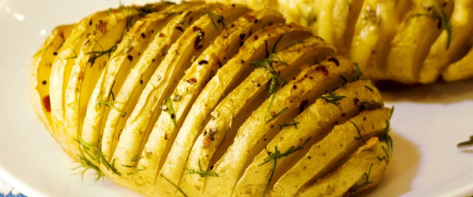

Картошка-гармошка

- картофель — некрупный
- чеснок
- укроп
- розмарин
В блендере смешать укроп, розмарин, чеснок, оливковое масло и соль. Разогреть духовку до 200 градусов.
Не крупную картошку тщательно помыть. Разрезать поперек не дорезая до низу полностью (можно с помощью столовой ложки). Протвень смазать подсолнечным маслом, выложить на него картофель. Каждый надрезсмазать получившейся зеленой смесью.
Поставить в духовку и выпекать приблизительно 40 минут.
 Назад к списку рецептов
Назад к списку рецептов